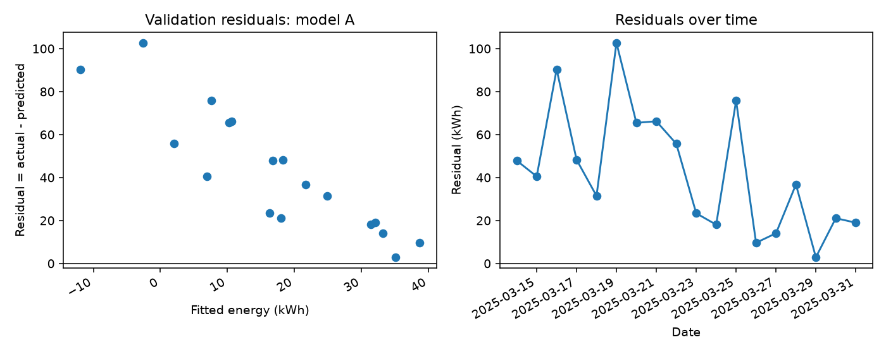
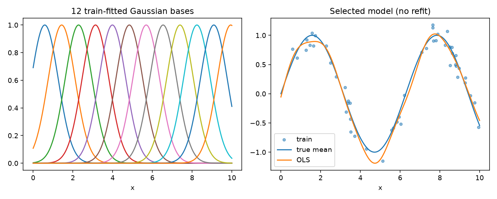

ผลรันจริงและการตีความ
อ่านหลังทำแล็บด้วยตนเอง เพื่อเปรียบเทียบกระบวนการและผล
สภาพแวดล้อมที่ทดสอบ
ผลด้านล่างคำนวณโดย examples/lab_walkthrough.py บนข้อมูลจำลองที่ให้มา ไม่ใช่คัดลอกผลตัวเลขจาก PDF
| แพ็กเกจ | เวอร์ชัน |
|---|---|
| python | 3.12.14 |
| numpy | 2.3.5 |
| pandas | 3.0.1 |
| sklearn | 1.9.1 |
P01 · Simple vs Multiple
| model | MAE | RMSE | R2 |
|---|---|---|---|
| Simple | 42.368 | 50.7576 | -8.11645 |
| Multiple | 42.7301 | 50.9916 | -8.20068 |
Simple มี validation RMSE≈50.758 ต่ำกว่า Multiple≈50.992 เล็กน้อย จึงเป็นตัวเลือกเบื้องต้นตาม RMSE แต่ทั้งคู่มี R² ติดลบมาก แสดงว่าผลงานยังไม่ดี ไม่ใช่หลักฐานว่า working_day ไม่มีประโยชน์เชิงเหตุและผล ต้องตรวจ residual และรูปแบบความสัมพันธ์ต่อ
P02 · เก้าการทดลอง
| seed | degree | train_RMSE | val_RMSE | prediction_at_2 |
|---|---|---|---|---|
| 11 | 1 | 0.364482 | 0.482083 | 0.361476 |
| 11 | 3 | 0.194938 | 0.251892 | 0.809037 |
| 11 | 12 | 0.166171 | 0.264382 | 0.936729 |
| 22 | 1 | 0.484418 | 0.48101 | 0.394996 |
| 22 | 3 | 0.267554 | 0.251801 | 0.976281 |
| 22 | 12 | 0.233836 | 0.339725 | 1.20549 |
| 33 | 1 | 0.441745 | 0.483436 | 0.446325 |
| 33 | 3 | 0.217896 | 0.278245 | 0.825318 |
| 33 | 12 | 0.189854 | 0.423283 | 0.863957 |
ทั้งสาม seeds ให้ degree3 มี validation RMSE ต่ำสุด ส่วน degree12 มี train RMSE ต่ำกว่า degree3 แต่ validation แย่กว่าและแกว่งกว่า (≈.264–.423) degree1 มี validation≈.48 สอดคล้อง underfit ความโค้ง ค่าทำนายที่ x=2 ของ degree12 อยู่≈.864–1.205 ซึ่งแกว่งกว่า degree3≈.809–.976 ดูทั้งคะแนนและค่าทำนายประกอบกัน การสังเกตเพียง 3 ชุดฝึกไม่ใช่การประมาณ expected bias/variance ที่แม่นยำ และ noise ของ validation ชุดเดียวมีผลต่อคะแนน
P03 · Validation ก่อน final test
| model | MAE | RMSE | R2 |
|---|---|---|---|
| A | 42.7301 | 50.9916 | -8.20068 |
| B | 1.83277 | 2.27471 | 0.981691 |
| C | 13.2792 | 15.659 | 0.132339 |
| D | 36.7701 | 44.5368 | -6.01878 |
กฎที่ระบุเลือก B แล้ว refit บน development90 ผล final test30: MAE=2.6901 kWh, RMSE=3.3530 kWh, R²=0.9399 ไม่ย้อนเปลี่ยนแบบจากคะแนนนี้

Residual ของ model A เป็นบวกทุกจุดใน 18 วันนี้ แปลว่าทำนายต่ำกว่าจริงทั้งหมด และ residual มีแนวโน้มลดลงเมื่อ fitted เพิ่มขึ้น จึงมีโครงสร้างที่โมเดลยังจับไม่ได้ การเพิ่ม temp² ใน B ลด validation RMSE จาก≈50.99 เหลือ≈2.27 แต่การใส่ Ridge ตามค่า C/D ที่กำหนดกลับแย่ลง อย่าสรุปว่า penalty ช่วยเสมอ จำนวน 18 จุดยังไม่พอพิสูจน์ assumptions ทั้งหมด
P04 · Percentile intervals
| method | lower_2.5 | upper_97.5 |
|---|---|---|
| ordinary | 2.34932 | 5.19713 |
| moving_block | 1.28705 | 7.14749 |
ทั้งสองวิธีเริ่ม generator ด้วย seed20260922 ของตนเอง ความต่างของช่วงสะท้อน sampling scheme ในการทดลองนี้ ไม่ใช่หลักฐานว่า block ต้องกว้างกว่า ordinary เสมอ หรือช่วงใดเป็น “ความจริง”
P05 · Basis เดียวกัน เปลี่ยน penalty
| model | train_RMSE | val_RMSE | zero_coefficients |
|---|---|---|---|
| OLS | 0.12404 | 0.177482 | 0 |
| Ridge | 0.124603 | 0.18073 | 0 |
| Lasso | 0.124585 | 0.17778 | 1 |
Train basis shape = [50, 12], σ=0.680590; เลือก OLS จาก validation แล้วคงโมเดล train เดิม ได้ final-test RMSE=0.177221
| x | x² | x³ |
|---|---|---|
| 9.541511 | 91.040433 | 868.663293 |
| 7.679321 | 58.971970 | 452.864679 |
| 1.259707 | 1.586863 | 1.998983 |

ผลชุดนี้ OLS ให้ validation RMSE≈.177482 ต่ำสุด Lasso≈.177780 และ Ridge≈.180730 ความต่าง OLS–Lasso มากกว่า tie tolerance 1e−6 จึงเลือก OLS โดยตรง Lasso ทำ coefficient เป็นศูนย์หนึ่งตัว แต่ไม่ได้ชนะ validation; regularization ไม่ได้ดีขึ้นเสมอภายใต้ค่าที่กำหนด